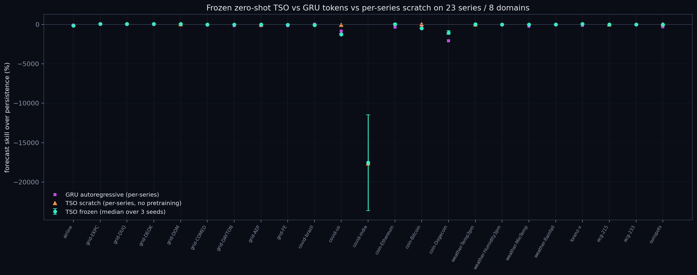
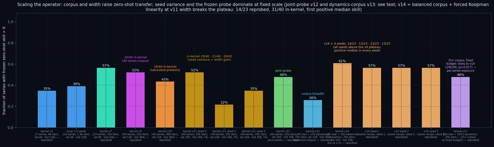
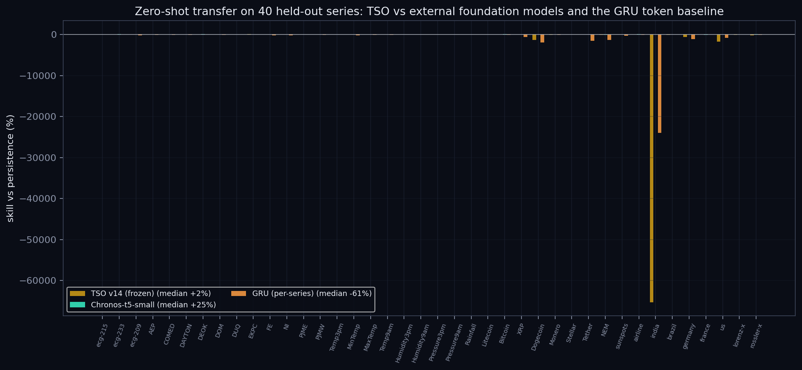
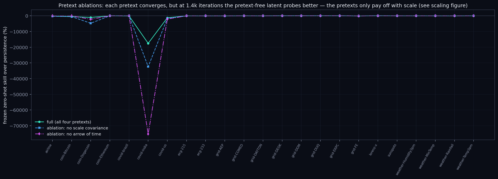
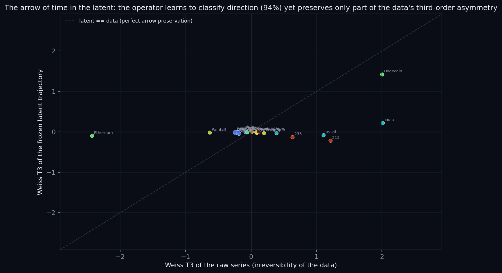
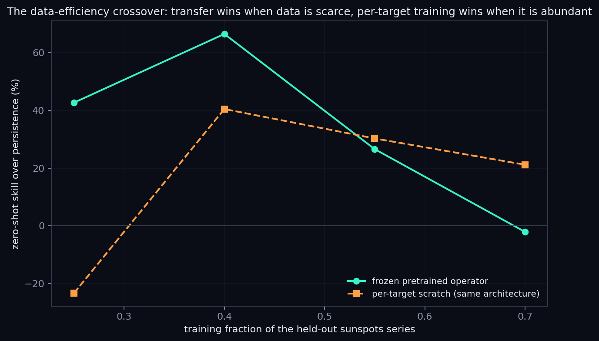
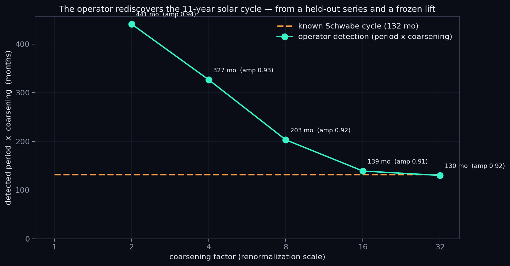

NMI-style preprint: download main.pdf

Frozen zero-shot TSO vs GRU tokens vs per-series scratch across 23 series / 8 domains

Scaling the operator (same probe, same corpus): 8/23 → 9/23 → 13/23 → 12/23 → 10/23 → 12/5/8 → 11/23 → 6/23 → 14/23 (v5→local→v7→v9→v10→ v11×3 seeds→v12 joint probe→v13 dynamics corpus→v14 balanced + forced Koopman → v14 ×4 seeds: 14/23 · 13/23 · 13/23 · 13/23) — v14 is the first run above the 12/23 plateau: 31/40 in-kernel wins, first positive median skill (+1.8), replicated across all 4 seeds; v17 (25× corpus at fixed budget) drops back to 11/23 — per-series exposure is the binding constraint

External foundation models on the identical protocol: Chronos-t5-small (frozen, ~80k-series corpus) beats the 40-series TSO on median transfer (+24.7 vs +0.4 pts, 27/40 head-to-head) — corpus scale is the gap

Pretext ablations at 1.4k iterations: pretexts converge but only pay off with scale

Weiss third-order irreversibility — data vs frozen latent (arrow preserved only in part)

Data efficiency: frozen wins the scarce-data regime on sunspots, scratch at full data

The frozen operator rediscovers the ~11-year solar cycle: 130.1 months vs known 132 (1.4% error)